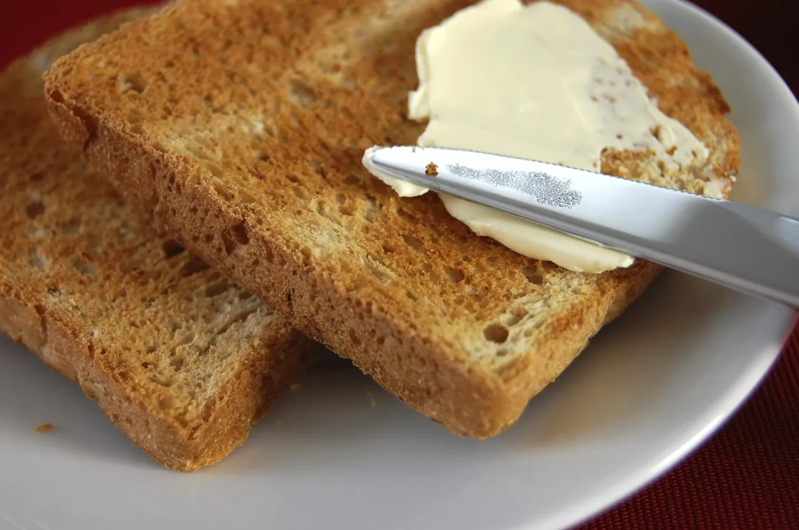

F*ing cool!
Bread-and-Butter

Description
ingredients
rye bread
butter
pink sult
cooking
Firstly, make tosts out of bread slices
Secondly, spread butter over warm tosts with a butter knife
Thirdly, drib some pink salt on top
Enjoy :)
Oh gosh! It's so tasty with morning coffee, mm!